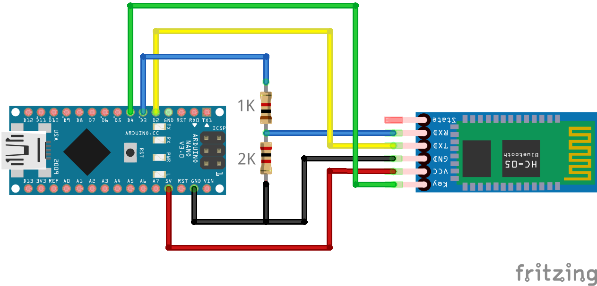

HC-05/06 Bluetooth Modules

The ubiquitous HC-05/06 Bluetooth modules for Arduinos provide a relatively simple mechanism to add Bluetooth capability to your EX‑CommandStation, with some caveats, which puts these devices into the Tinkerer category.
{kind=link}
{kind=link}
The main two items to take note of prior to using these is that they require some programming prior to use, and they are designed to work with 3.3V logic, meaning simply connecting these to a 5V microcontroller (such as a Mega2560) can lead to damage.
Note
Bluetooth connectivity is a one to one pairing only, meaning only one throttle or controller can be connected at one time. If you want wireless connectivity for multiple throttles or controllers simultaneously, you will require WiFi or Ethernet connectivity.
Note
For those using JMRI, a Bluetooth connection can substitute for a USB cable if desired, provided the computer (or Raspberry Pi) running JMRI can pair with a HC-05/06 device.
Once paired, simply configure JMRI to use the serial port associated with the HC-05/06 device.
HC-05 vs. HC-06
Tip
For price, capability, and simplicity’s sake, we recommend sticking with the HC-05 device, as it is much simpler to program than the HC-06, has far more capability, and only costs a fraction more.
From a security perspective, the HC-05 allows up to a 16 character alpha-numeric password, whereas the HC-06 only supports a 4 digit PIN number.
The HC-05 and HC-06 modules are visually almost identical, however the HC-05 has 6 pins and is capable of being both a master and slave Bluetooth device, whereas the HC-06 has 4 pins and can only be a slave device. The HC-05 has an extensive AT command set for programming, whereas the HC-06 is very limited, allowing changes only to the baud rate, name, and PIN (note that they are probably the only three items required for this application anyway).
The HC-05 has a dedicated mode to send the AT commands to program it, while the HC-06 can be programmed via AT commands any time it is not paired. This makes it sound like the HC-06 is the simpler option to program, however to do so interactively means you need to use a serial console that sends the entire command in one go within 1 second, and you cannot practically type the commands in fast enough. The Arduino IDE can be used for this.
This is why our recommendation is to stick with the HC-05 device, as they are typically only a little more expensive, but are much easier to program interactively, and are far more capable devices.
Programming the modules
Danger
The HC-05/06 modules use 3.3V logic, so you must ensure that you use either a resistor divider or level shifter when connecting the Rx pin of the device you’re using to program it.
The simplest method to program these modules is by using an additional microcontroller such as an Arduino Nano or Uno, connected as per the diagram below. If you are using a HC-06 module, the green “Key” connection is not required as this pin does not exist.
{kind=link}
The Arduino IDE’s Serial Monitor can be used to program either module successfully providing it is configured correctly for the specified module in the relevant section below.
Note
If you wish to simply use the modules without configuring anything, you can do so for the device name and PIN, noting that the whole world will know the default pin, and anyone can therefore pair to your device.
You will, however, have to set the baud rate to 115200 in order to be able to communicate successfully with your EX‑CommandStation.
The default settings are likely to be:
Device name: HC-05 or HC-06
Pin: 0000 or 1234
Baud rate: 9600
Interactive programming sketch
This sketch allows interactive programming of either module by entering AT commands in the Arduino IDE serial console.
Given these devices are considered Tinkerer level, we will assume you are familiar with uploading a sketch to an Arduino, and will not cover that detail here.
#include <Arduino.h>
#include <SoftwareSerial.h>
SoftwareSerial btSerial(2,3);
// Default HC-05 baud rate is 38400, HC-06 is 9600
#define BAUD_RATE 38400
// #define BAUD_RATE 9600
char c=' ';
void setup() {
Serial.begin(9600);
Serial.println("Ready to program");
btSerial.begin(BAUD_RATE);
pinMode(4, OUTPUT);
digitalWrite(4, HIGH);
}
void loop() {
if (btSerial.available()) {
c = btSerial.read();
Serial.write(c);
}
if (Serial.available()) {
c = Serial.read();
btSerial.write(c);
}
}
HC-05 programming
To program the HC-05 successfully, it needs to be powered on with the “Key” pin set high to enter the “AT” command mode. Note that some devices have this pin labelled “EN” for enable, and others reportedly do not have the pin connected to a header pin at all. Most devices, however, have a tiny push button that can be held when powering the device on to enter “AT” command mode.
The programming sketch in the previous section should place the HC-05 into “AT” command mode successfully, provided it is connected correctly, and your device has the “Key” pin available.
When the HC-05 is in “AT” command mode, the blue and red LEDs should blink slowly, around 2 seconds on/off. When not in this mode, the blue and red LEDs will blink rapidly.
If the HC-05 does not enter the “AT” command mode, ensure the “Key” pin is connected correctly, and try holding the button while powering on in case the “Key” pin is not connected internally within the module.
To send the required “AT” commands to the module, open the Arduino IDE’s serial monitor, set the new line option to “Both NL & CR”, and set the baud rate to “9600”.
To verify the device is ready and in “AT” command mode, enter “AT” and click “Send” (or press the <Enter> key), and the response “OK” should appear in the serial monitor.
Providing this has been successful, enter the following commands one at a time to configure the various options, and each one should return “OK” to confirm the command was received successfully:
AT+NAME=<DEVICENAME>
AT+PSWD=<PASSWORD>
AT+ROLE=0
AT+UART=115200,0,0
You may set <DEVICENAME> to be anything you wish (up to 31 characters), and <PASSWORD> can be up to a 16 character alpha-numeric password. The “AT+ROLE” command sets the HC-05 to “Slave” mode, and the “AT+UART” command sets the baud rate to 115200.
Note
While the documentation says the password can be up to a 16 character alpha-numeric password, testing shows that it cannot be a mix of letters and numbers, so either choose numbers or letters for the password. Given the variety of modules on the market, this issue may be specific to the unit being tested and may not be the case with other brands.
For example, to set the device name to “EX-CommandStation” and the password to “secret12345”, the entire command list to send would be:
AT+NAME=EX-CommandStation
AT+PSWD=MySecret
AT+ROLE=0
AT+UART=115200,0,0
Once you have completed programming the device, it will need to be power cycled, with the “Key” pin left low in order for the settings to take affect, and to exit the “AT” command mode.
You should be able to pair to the device using the updated PIN, and be able to connect to your EX‑CommandStation via this interface (see :ref`reference/hardware/bluetooth/hc-05-06:connecting a hc-05/06 to your ex-commandstation`).
HC-06 programming
Unlike the HC-05, the HC-06 module has no specific “AT” command mode, and can be programmed at any time it is not paired with another Bluetooth device. The HC-06 can only ever operate in “Slave” mode also.
The other notable difference as previously mentioned is that programming commands must be entered within a 1 second duration. This means the only effective way to send them is by using a serial console that lets you enter the complete command string in one go, and the Arduino IDE can be used for this.
To send the required “AT” commands to the module, open the Arduino IDE’s serial monitor, set the new line option to “No line ending”, and set the baud rate to “9600”.
Note that these settings take effect immediately, and therefore you should send the baud rate command last, otherwise you will effectively be disconnected from the HC-06 module.
To verify the device is ready and in “AT” command mode, enter “AT” and click “Send” (or press the <Enter> key), and the response “OK” should appear in the serial monitor.
Providing this has been successful, enter the following commands one at a time to configure the various options:, and each one should return “OK” to confirm the command was received successfully. Note that unlike the HC-05, the return text is slightly different for each command as noted:
AT+NAME<DEVICENAME> (returns OKsetname)
AT+PIN<PIN> (returns OKsetPIN)
AT+BAUD8 (returns OK115200)
You may set <DEVICENAME> to be anything you wish, whereas <PIN> must be a 4 digit number. The “AT+BAUD8” command sets the baud rate to 115200.
For example, to set the device name to “EX-CommandStation” and the PIN to “5432”, the entire command list to send would be:
AT+NAMEEX-CommandStation
AT+PIN5432
AT+BAUD8
You should now be able to pair to the device using the updated PIN, and be able to connect to your EX‑CommandStation via this interface (see :ref`reference/hardware/bluetooth/hc-05-06:connecting a hc-05/06 to your ex-commandstation`).
Once the HC-06 is paired and a device actively connects to it, the blue and red LEDs should cease blinking rapidly and stay on.
Other programming methods
You can use other methods to program these devices, such as ESP01 programming modules, but documenting these in detail is outside the scope of this project.
In essence, any device that converts USB to 3.3V TTL logic levels can be used, noting that the HC-05/06 modules require between 3.6 and 6V DC to power them, and you will need to ensure that the Rx pin is exposed to nothing higher than 3.3V. Connect the Tx pin of the USB device to the Rx pin of the HC-05/06, and Rx to Tx pin.
If you do happen to use an ESP01 programming module for example, you will need to provide power to the HC-05/06 module separately, as it only provides 3.3V.
Connecting a HC-05/06 to your EX-CommandStation
Danger
The HC-05/06 modules use 3.3V logic, so you must ensure that you use either a resistor divider or level shifter when connecting the Rx pin of the device to your EX‑CommandStation.
Once your HC-05/06 module has been programmed for the correct baud rate, and has the appropriate device name and PIN set, you will need to connect it to your EX‑CommandStation.
It is recommended to connect a HC-05/06 device to an additional serial port on your EX‑CommandStation rather than the first serial port. If you have no choice (eg. you use an Uno with only one serial port), then you will need to disconnect it when uploading new versions of the EX‑CommandStation software.
This diagram outlines connecting a HC-05 to serial port 1 on a Mega2560.
{kind=link}
To enable communication via the HC-05 connected to serial port 1, you will also need to edit “config.h” and uncomment or add the following line (typically found towards the bottom) to ensure all DCC-EX API commands are sent/received from this serial port:
#define SERIAL1_COMMANDS
Bonus material - How to pair a HC-05 with another HC-05/06
Note
The best reference we have found for this is on Martyn Currey’s website.
We provide a fairly concise version of the process here, so it’s best to refer to the excellent material provided on his website for further clarity.
For those writing throttle or control software that wish to connect to an EX‑CommandStation via Bluetooth, this outlines how to configure a HC-05 module connected to a throttle or controller serial port to pair with a slave HC-05/06 module connected to an EX‑CommandStation.
Firstly, you will need to program the slave device as per either HC-05 programming or HC-06 programming, and have it connected to your EX‑CommandStation.
Once your slave HC-05/06 device is ready, you will need to put your HC-05 device into “AT” command mode as per HC-05 programming in order to configure it as a master device, and pair it with your HC-06 device.
Validate your slave device is available with AT+INQ and note the address (eg. 0002:72:0A3C7F). When specifying this device address in the “AT” commands below, it needs to be in “NAP,UAP,LAP” format, resulting in this example address becoming “0002,72,0A3C7F”.
For the examples below, we will use a HC-05 pairing with a slave HC-06 using the same details from our examples above.
Configure the slave HC-06
The first step is to use these “AT” commands to configure your slave HC-06:
AT+NAMEEX-CommandStation <<-- Set the slave device name
AT+PIN5432 <<-- Set the slave PIN
AT+BAUD8 <<-- Set slave to 115200 baud rate
At this point your HC-06 should be set ready to be paired with.
Obtain the HC-06 address
The next step is to use the master HC-05 to find the HC-06 address, which can be done with these commands, noting the HC-05 still needs to be in the “AT” command mode:
AT+RMAAD <<-- Clear any existing paired information
AT+ROLE=1 <<-- Set master role
AT+RESET <<-- This reboots the HC-05, continue below when started again
AT+CMODE=1 <<-- Pair with any device
AT+INQM=0,5,9 <<-- Set inquiry mode
AT+INIT <<-- Initialise profile
AT+INQ <<-- Discover available Bluetooth devices
After the last command is sent, you should receive a list of up to 5 Bluetooth devices, and in the list should be the HC-06. In our example case, it should appear something like this:
+INQ:0021:11:012446,1F00,FF9C,EX-CommandStation
If the device name is not visible (the last part “,EX-CommandStation”) you can find the name by using this command (remember you need to use the NAP,UAP,LAP addressing format):
AT+RNAME?0021,11,012446
This should respond with +RNAME:EX-CommandStation if it’s the correct device.
Configure the master HC-05
Now that the slave HC-06 device is ready and you have obtained its address, the final step is to configure the HC-05 to pair with this device automatically.
Again in “AT” command mode, these are the “AT” commands you will need to execute to configure your HC-05 to automatically pair with your slave HC-06 device:
AT+NAME=MyThrottle <<-- Set as desired
AT+UART=115200,0,0 <<-- Set the same baud rate as our slave
AT+PSWD=5432 <<-- Set the same as the slave
AT+PAIR=0021,11,012446,5 <<-- Pair with the slave address, 5 second timeout
AT+BIND=0021,11,012446 <<-- Bind to the slave address only
AT+CMODE=0 <<-- Set to pair with the slave device only
AT+LINK=0021,11,012446 <<-- Link to our slave device
Once these commands are run, the final “AT+LINK” command should respond with “OK”, and then the HC-05 master LED should blink twice rapidly approximately every 2 seconds, and the HC-06 slave device’s LED should be on and no longer blinking. These are the visual indicators that the devices are paired.
At this point, your HC-06 is already connected to your EX‑CommandStation ready to go, and you can disconnect your HC-05 from the programmer and connect it to your throttle/controller (don’t forget the resistor divider or level shifter for 5V devices!).
The next time it powers on, it should automatically pair with your EX‑CommandStation via the HC-06.